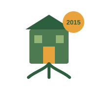

Educação e sustentabilidade para transformar comunidades
Sobre
A ONG Raízes do Amanhã é voltada para educação e sustentabilidade em comunidades periféricas, atuando em bairros de baixa renda com foco em crianças, jovens e famílias.
Missão
Promover educação de qualidade, consciência ambiental e oportunidades de desenvolvimento social para comunidades vulneráveis, através de projetos que unem tecnologia, cultura e sustentabilidade.
Valores
- Inclusão e respeito à diversidade.
- Sustentabilidade ambiental.
- Educação como ferramenta de transformação.
- Transparência na gestão de recursos.
- Trabalho colaborativo com a comunidade.
Fundação
- Fundada em 2015, em uma cidade fictícia chamada vale verde.
- Já atendeu mais de 3.200 pessoas.
- Mantida por doações, parcerias com empresas locais e eventos beneficentes.

Contatos
Rua das Acácias, 245 — Vale Verde/SP
E-mail:contato@raizesdoamanha.org.br
Telefone:19933334444
Instagram:@raizesdoamanha